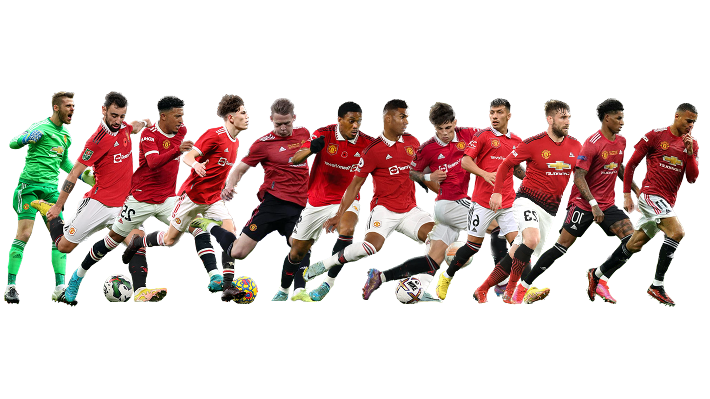

MANCHESTER

UNITED
맨체스터 유나이티드는 어떤 팀인가요?
영국 잉글랜드 그레이터맨체스터 주의 트래포드를 연고로 하는
프로축구 클럽. 뉴턴 히스 LYR F.C.(Newton Heath LYR F.C.)란
이름으로 창설되었다.
현재 잉글랜드
최상위 프로 축구 리그 최다 우승팀이자,
잉글랜드에서 유일하게 트레블을 달성한 기록을 보유하고 있는, 잉글랜드를
대표하는 명문 구단이다.
박지성 입단 전에도 해외 축구팀 중에서는
국내에서 가장 인기 있는 팀 중 하나였다.
2002년 한일 월드컵 때 화제를 모은 미남 데이비드 베컴으로 대표되는 인기
선수들이 뛰고 있는 팀이기도 했고
당시 해외 축구에 접근성이 부족했던 때에 EPL의 최강자 이미지와
1999년 트레블에 대한 화제성이 크기도 한 시기였기 때문.
그러던 중
2005년에 한국 선수인
박지성이 입단하면서 해외 축구의
인기를 선도하며 팬이 폭발적으로 늘어났다.
당시 한국에서 압도적으로 인기가 많은 해외 축구팀이 되었고 국내에서의
위상은 그야말로 국민클럽이라고 불러도 손색이 없었다.